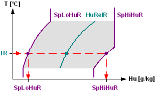
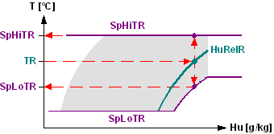
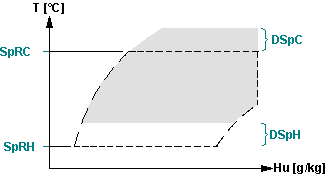
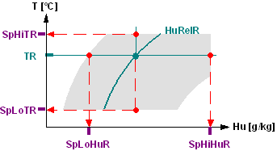
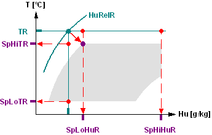
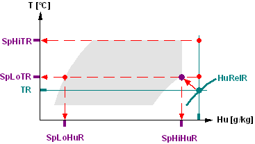
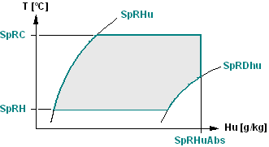
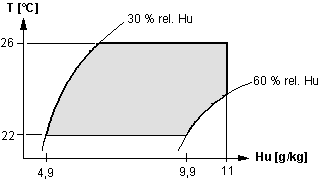
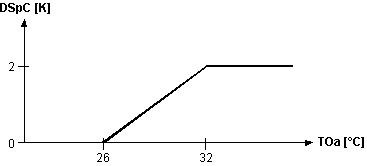
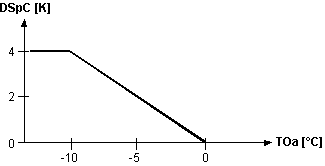

[SP_FIELD] 通过设定值字段确定房间设定值
功能块 SP_FIELD 根据室内空气状态和房间设定点（设定点字段）计算序列级联控制的温度和湿度上限和下限设定点。
SP_FIELD 根据室内空气状态和房间设定点（设定点字段）计算序列级联控制的温度和湿度上限和下限设定点。 SP_FIELD 允许用户轻松参数化房间设定点，其中包括房间内的温度舒适度（设定点字段）。湿度和温度设定点以物理单位 [% rel.] 定义。湿度] 位于功能块中，并作为湿度控制回路的绝对湿度进行传输。
功能块中集成了以下功能：
- Conversion of relative humidity values into absolute humidity values.
- The limits for the setpoint field can be set.
- Summer/winter compensation is possible.
该功能块根据参数化的极限值（设定点字段）从当前室内空气状态计算序列级联控制的可变设定点。然后将参数化的相对湿度限值转换为绝对湿度值。
步 | 功能块中的处理过程 |
|---|---|
1 | 该功能块根据当前室温 [TR] 和设定点字段计算绝对湿度设定点。加湿设定点 [SpLoHuR] 和除湿设定点 [SpHiHuR] 随着室温沿设定点场的增加而增加。  |
2 | 该功能块根据当前房间湿度 [HuRelR] 和设定值字段计算温度设定值。 高湿度时：  |
--- | 如果启用 Summer/winter 补偿 [SwCmp] = 1，则加热设定值 [SpRH] 和冷却设定值 [SpRC] 将通过值 [DSpH] 和 [DSpC] 进行校正：  |
Example: Energy-free zone

Example: Cooling/humidifying

Example: Heating/dehumidifying

输入 | 描述 | 数据类型 | 默认值 |
|---|---|---|---|
TR | Room temperature 测量（参考）室温。 | 真实的 | 20.0 [°C] 0.0…50.0 [°C] |
HuRelR | Relative humidity for room 房间湿度的测量值。 | 真实的 | 30.0 [%RH] 0.0...100.0 [%RH] |
SpRC | Room setpoint for cooling 室温的冷却设定值。设定点字段的上限。 | 真实的 | 26 [°C] 0.0...50.0 [°C] |
SpRH | Room setpoint for heating 室温的加热设定值。设定点字段的下限。 | 真实的 | 22 [°C] 0.0...50.0 [°C] |
SpRHu | Room setpoint for humidification | 真实的 | 30.0 [%RH] 0.0...100.0 [%RH] |
SpRDhu | Room setpoint for dehumidification 房间湿度的除湿设定点（% 相对湿度）。设定点字段的右限制曲线。 | 真实的 | 60.0 [%RH] 0.0...100.0 [%RH] |
SpRHuAbs | Room setpoint for absolute humidity（局限性） 房间湿度绝对设定值上限（g/kg 绝对湿度）。设定点字段的右限制。如果超出范围，则使用 20.0。 | 真实的 | 11.0 [g/kg] 0.0...20.0[g/kg] |
AP | Air pressure 气压测量值或恒定值（参见工程） | 真实的 | 0.96 [bar] 0.0...4.0 [bar] |
SwCmp | Summer/winter compensation 启用/disable加热和冷却设定点的校正。 | 布尔值 | 0 |
0：无 Summer/winter 补偿。 | |||
DSpC | Delta cooling setpoint 冷却设定值的增量 [SpRC] | 真实的 | 0.0 [K] -20.0...20.0 [K] |
DSpH | Delta heating setpoint 加热设定值的增量 [SpRH] | 真实的 | 0.0 [K] -20.0...20.0 [K] |
输出 | 描述 | 数据类型 | 默认值 |
|---|---|---|---|
SpHiTR | Setpoint high: Room temperature 计算冷却设定点以控制室温。 | 真实的 | 26.0 [°C] |
SpLoTR | Setpoint low: Room temperature 计算加热设定点以控制室温 | 真实的 | 22.0 [°C] |
SpHiHuR | Setpoint high: Room humidity Calculated humidification setpoint (g/kg absolute humidity) to control the room humidity | 真实的 | 5 [g/kg] |
SpLoHuR | Setpoint low: Room humidity 计算除湿设定值（g/kg 绝对湿度）以控制房间湿度。 | 真实的 | 10 [g/kg] |
|
SysUnits | System of units 表示system of units由块使用。 | 整数 | 1: International system of units (SI) (fallback) 1...5 |
1: International system of units (SI) (fallback) | |||
ErrCode | Error code indication | 整数 | 0: No error |
= 0 - No error | |||
Parameterizing the setpoint field
湿度设定点 [SpRHu] 和 [SpRDHu] 在相对湿度的 % 中进行参数化。
湿度的绝对设定点 [SpRHuAbs] 在绝对湿度的 g/kg 中进行参数化。

设定点字段的限值根据 DIN 1946 预设。

Basic design
SP_FIELD 通常用作顺序级联控制的设定值发送器。 SP_FIELD 为温度控制提供设定值 [SpHiTR]、[SpLoTR]，为湿度控制提供设定值 [SpHiHuR]、[SpLoHuR]。
Summer/winter compensation
用于加热 [SpRH] 和冷却 [SpRC] 的房间设定点可通过引脚 [DSpH] 和 [DSpC] 更改，例如，通过互连到外部温度控制设定点补偿（CHAR 的特性曲线）或房间设备。
Example: Outside temperature-controlled summer compensation
CHAR (CONTROL) 根据以下采样点提供外部温度控制的冷却校正值：

室外温度 °C | 26 | 29 | 32 |
修正值K | 0 | 1 | 2 |
设定的冷却设定点 [SpRC] 根据外部空气温度 TOa 通过因子 [DSpC] 进行校正。因此，对于例如 的冷却设定点 [SpRC]，有效冷却设定点被校正为 27 °C。 25 °C，外部气温为 32 °C。
Example: Outside temperature-controlled winter compensation
CHAR (CONTROL) 根据以下采样点提供外部温度控制的加热校正值：

室外温度 °C | -10 | 0 |
修正值K | 4 | 0 |
设定的加热设定点 [SpRH] 根据外部空气温度 TOa 通过因子 [DSpH] 进行校正。因此，对于例如 的加热设定点 [SpRH]，有效加热设定点被校正为 24 °C。 20 °C 外部气温为 -10 °C。
Parameterizing air pressure [AP]
气压影响相对湿度到绝对湿度的转换。如果气压无法作为测量变量，则可以将其定义为常数。
气压随着海拔高度的增加而降低；因此，需要根据海拔高度来定义常数：
海拔高度（米） | AP (bar) | 海拔高度（米） | AP (bar) |
|---|---|---|---|
0 | 1.013 | 1200 | 0.877 |
300 | 0.978 | 1500 | 0.846 |
600 | 0.943 | 1800 | 0.815 |
900 | 0.91 | 2100 | 0.785 |
Setpoint field
该功能块允许用户根据舒适字段定义空调设备的设定点。湿度和温度设定点以物理单位 [% rel.] 定义。湿度] 位于功能块中，并作为湿度控制回路的绝对湿度进行传输。
SP_FIELD 允许参数化房间设定点，其中包括房间内的温度舒适度（设定点字段）。当人类对周围环境的温度和湿度感到满意时，就会产生热舒适感。舒适室温度和湿度的范围在 DIN 1946 第 2 部分中进行了描述，被认为是最先进的技术。
使用字段作为设定值有两个原因：
- Comfort sensation:
Optimal working environment conditions exist not just at a specific setpoint for room temperature and room humidity, but within a particular range. Additionally, it is meaningful to limit the absolute humidity at high temperatures; else, the air is too muggy. This limit value typically is 11 g/kg. - Energy savings:
The greater the setpoint field area, the greater the energy saving potential.
Summer/winter compensation
如今，summer/winter 补偿代表了通风和空调设备的标准解决方案。在这方面，室温的设定点根据外部空气温度而变化，例如。具有 CHAR (CONTROL) 的特性曲线。
在夏季运行时，增加制冷设定值可防止室外气温与室温之间的温差过大。此外，还节省了冷却能量。
在冬季运行时，通过增加加热设定点来平衡较冷的周围表面的影响。
如果加热设定值 [SpRH] 大于冷却设定值 [SpRC]，则修正冷却设定值：
[SpRH] = [SpRC] - 0.5 K.
如果加湿设定点 [SpRHu] 大于除湿设定点 [SpRDhu]，则修正除湿值：
[SpRHu] = [SpRDhu] - 5.0 %.
在这些情况下，输出是根据修正计算的。
设定值低：如果 SpHiHuR - SpLoHuR 小于 0.5 g/kg.，则房间湿度 [SpLoHuR] 也会被修正
SpLoHuR = SpHiHuR – 0.5 g/kg.